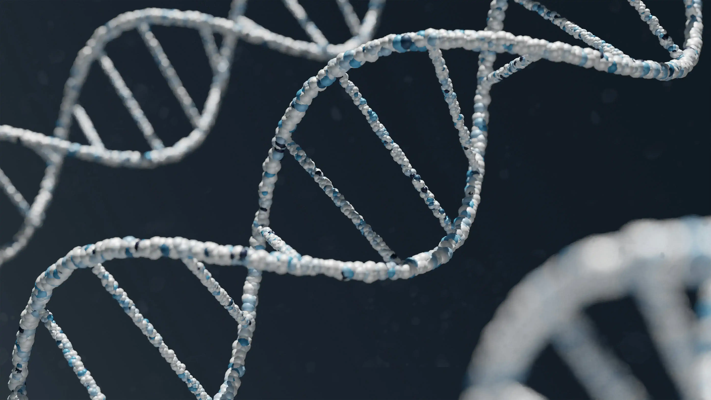
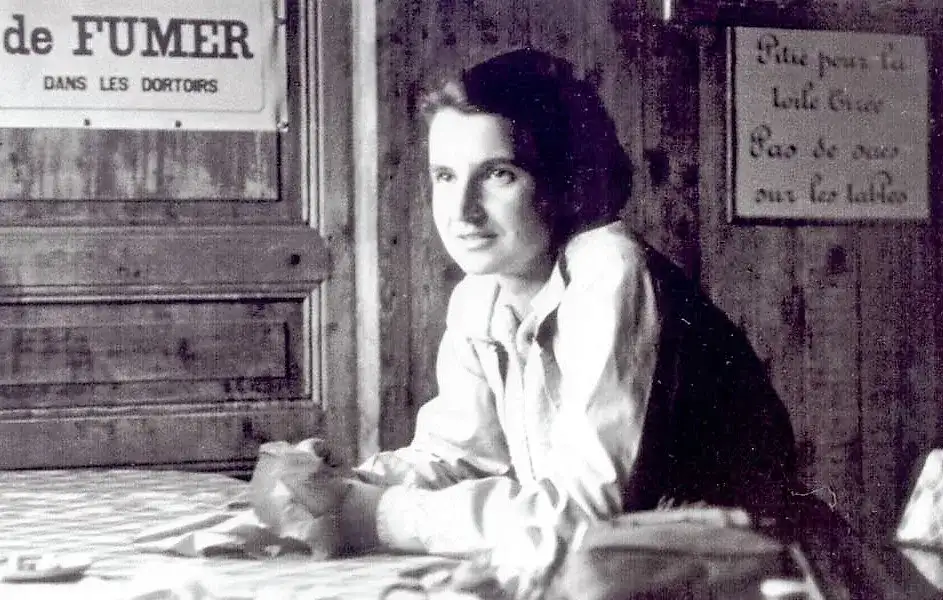

Estructura del ADN

Rosalind Franklin
Sus fotografías de difracción de rayos X, fueron fundamentales para revelar la estructura de doble hélice del ADN. Su trabajo proporcionó la evidencia clave que permitió construir el modelo correcto.